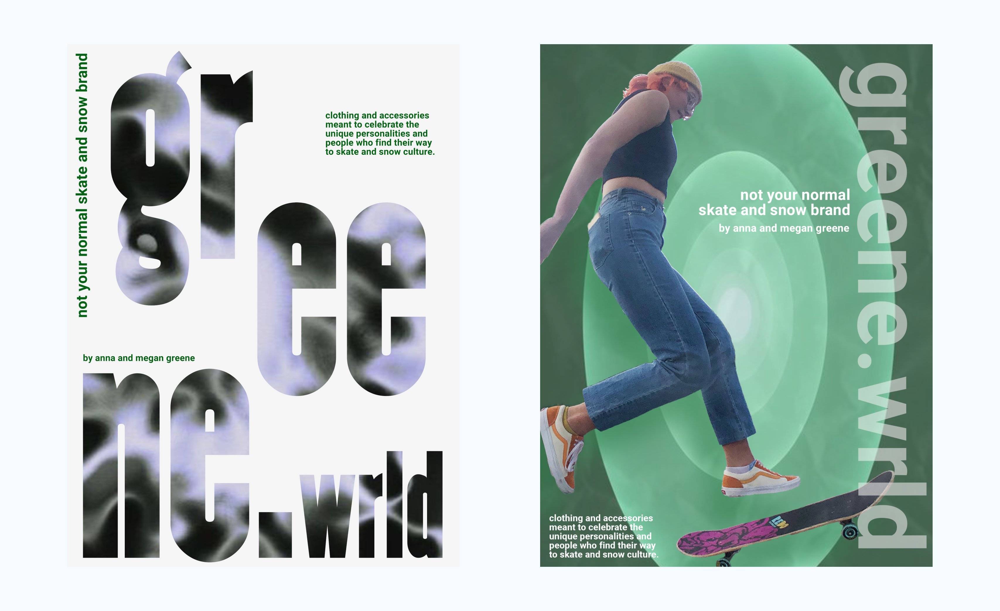

Greene.wrld
A board sports brand built from scratch

Overview
For the class ME 125: Visual Frontiers, I was given the imperative to create an entire brand from scratch. This included creating a brand identity, narrative, and variety of interactions: posters, website, etc. The brand I created was greene.wrld: a snow and skate apparel company (fictionally) founded with my sister. My challenge was to create a website and brand identity that conveyed our vision statement: “Clothing and accessories meant to celebrate the wacky personalities and people who find their way to skate and snow culture.” My high level goals for the project were:
- to create a brand identity that communicated our core values: authentic, festive, and genuine
- to create a website that has a design consistent with our brand identity while also operating intuitively for e-commerce users
Year
2021
2021
Skills
UI & UX Design
Wireframing
Prototyping
Branding
Graphic Design
UI & UX Design
Wireframing
Prototyping
Branding
Graphic Design
Tools
Figma
Adobe Suite
Procreate
Blender
Figma
Adobe Suite
Procreate
Blender
Project stages
The traditional Stanford design process of idea generation, concept development, and evaluation was used at every stage of this project. Taking an iterative approach to the four stages outlined below allowed me to explore explore lightweight and innovative concepts as quickly as possible.
Business Goals & Brand Personality
Inspired by Designing Brand Identity by Alina Wheeler, I went through a process of answering core questions and then eventually creating a brand profile worksheet. To inform my business goals & brand personality, I completed competitor research and defined my customer base/ideal user.
Brand profile worksheet created to capture high level thinking about my project.
Logo Design
I started with traditional pen and paper to create a logo for my brand. The hand drawn typography ended up becoming a central component of brand identity, and over the course of the project I explored using different mediums to create a 3d version of the spiral logo. The final results were created using Procreate, Adobe Illustrator, & Blender. I used an iterative design process that involved competitor research, peer feedback, and, of course, a lot of iteration both with pen and paper and digitally.
Narrative Elements
In order to build out a full brand identity, I also created additional materials meant to supplement the final website. These materials included posters and an optional second element. I choose to create a short hand-animated film.

The final poster designs.
Web & Mobile Design
I followed the standard design thinking process to develop the final high-fidelity prototype of greene.wrld. The website uses familiar touchstones and a simple user interface to allow users to easily navigate our brand and consistently redirect them to our products: ultimately our goal as an apparel company is to sell clothes. For example, an intuitive design decision I made was putting the menu bar at the top and keeping menu items consistent with traditional e-commerce sites.
However, I used hand-drawn typography, unique animation, and an unexpected color palette to communicate to users the DIY, hand-grown ethos of our brand. Centering focus on the “what our friends are wearing section” was a way to communicate this tight-knit feeling and brand identity while also not distracting from the real focus of the website, clothing that we are selling to users.
However, I used hand-drawn typography, unique animation, and an unexpected color palette to communicate to users the DIY, hand-grown ethos of our brand. Centering focus on the “what our friends are wearing section” was a way to communicate this tight-knit feeling and brand identity while also not distracting from the real focus of the website, clothing that we are selling to users.

The final mobile design of the homepage. I used a mobile first approach to designing the website for a challenge.
The Figma prototype of the final web design.
Please make prototype fullscreen and go to "Options" > "Fit width".
Please make prototype fullscreen and go to "Options" > "Fit width".
My takeaways
Text